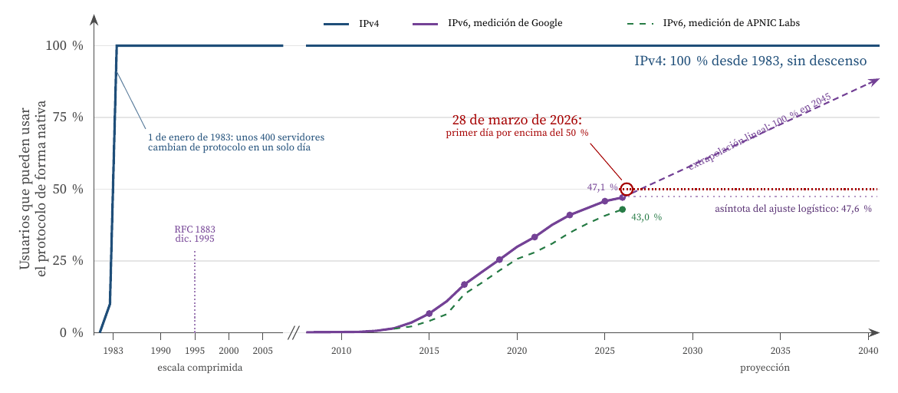
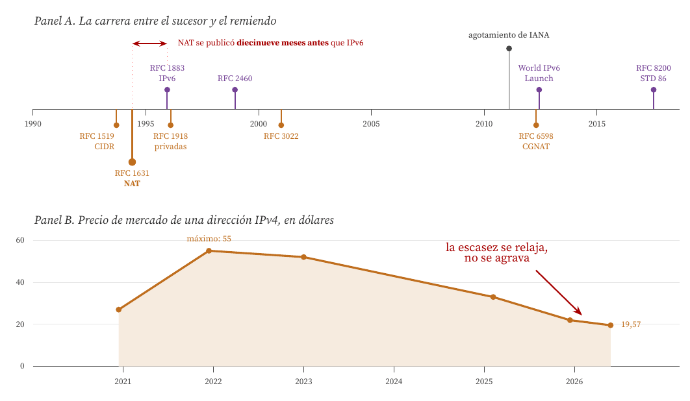
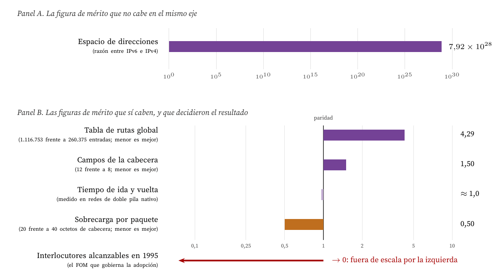
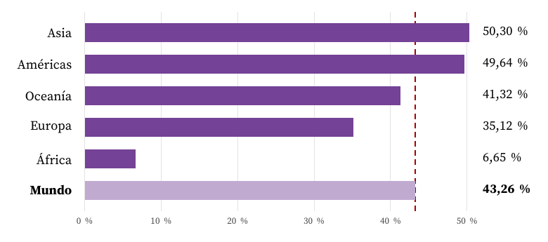

Treinta años de superioridad técnica sin sustitución, 1981 a 2026
Carlos Luis Rojas Aragonés
El avance que analizo es IPv6, la versión 6 del Protocolo de Internet. Se especificó en diciembre de 1995 (Deering y Hinden, 1995), se reeditó en diciembre de 1998 (Deering y Hinden, 1998) y alcanzó la categoría de norma de Internet, STD 86, en julio de 2017 (Deering y Hinden, 2017). Su predecesor, IPv4, se publicó en septiembre de 1981 (Postel, 1981a) y sigue siendo, cuarenta y cinco años después, el protocolo que todo usuario de Internet necesita.
El 12 de agosto de 2026, la medición de Google situaba el uso de IPv6 en el 47,0 por ciento de sus usuarios (Google, 2026) y la de APNIC Labs en el 43,2 por ciento (APNIC Labs, 2026). Treinta años después de su publicación, el sucesor no ha sustituido a nada: convive.
Este caso es exactamente el inverso del que suele estudiarse en gestión tecnológica. No se trata de un titular excelente que pierde ante un invasor mediocre pero barato. Se trata de un invasor que es superior en casi todas las figuras de mérito medibles, que fue diseñado por el mismo organismo que diseñó al titular, que no tiene competidor alguno y que aun así no consigue desplazarlo. La pregunta del enunciado, por tanto, admite aquí una respuesta más incómoda que un simple «no»: la mejor tecnología ni siquiera pierde, se queda esperando.
Hay un dato que ordena todo el análisis y conviene adelantar: el remiendo que salvó a IPv4 se publicó antes que IPv6. La traducción de direcciones de red, NAT, apareció en mayo de 1994 (Egevang y Francis, 1994) y el direccionamiento sin clases, CIDR, en septiembre de 1993 (Fuller et al., 1993), mientras que IPv6 no se especificó hasta diciembre de 1995. Cuando el sucesor llegó, el problema que justificaba su existencia ya tenía una solución en producción.
Una figura de mérito (FOM) es una medida cuantitativa del desempeño de una tecnología en la función que presta, independiente de la implementación concreta que la realiza (de Weck, 2022). Cada tecnología recorre en su FOM una curva en S: arranque lento, mejora rápida y saturación al acercarse a un límite físico o económico (Foster, 1986; Utterback, 1994).
El caso de IPv6 obliga a añadir una segunda familia de conceptos, porque un protocolo de red no es un producto de consumo individual. Su valor para cada adoptante depende de cuántos otros lo hayan adoptado ya, que es la definición de externalidad de red (Katz y Shapiro, 1985). Tres consecuencias, todas documentadas en la literatura y todas visibles en los datos, estructuran el análisis.
La Figura 1 representa el proceso completo. Como FOM del eje vertical uso la fracción de usuarios que puede utilizar el protocolo de forma nativa, porque es el único atributo comparable entre las dos transiciones y porque es, precisamente, el atributo que gobierna las externalidades de red.

Figura 1. Curvas en S de las dos transiciones de protocolo de Internet sobre un mismo FOM. La curva de IPv4 recoge el cambio de NCP a TCP/IP planificado en Postel (1981b) y ejecutado el 1 de enero de 1983 sobre unos 400 servidores. La de IPv6 son las medias anuales de las dos series públicas de medición: la de Google, diaria desde el 4 de septiembre de 2008 (Google, 2026), y la de APNIC Labs, suavizada a 30 días desde el 7 de octubre de 2013 (APNIC Labs, 2026), ambas descargadas el 15 de agosto de 2026. La extrapolación lineal es la regresión de los últimos cinco años de la serie de Google, con pendiente de 2,73 puntos porcentuales por año. La asíntota logística procede de ajustar L / (1 + e−k(t−t₀)) a los 6.552 datos diarios por mínimos cuadrados. Ambas extrapolaciones se discuten en la sección de precisiones y limitaciones. Elaboración propia.
Tres lecturas inmediatas de la figura.
Primera: el cruce no ha ocurrido, y la comparación de las dos transiciones es de otro orden. El paso de NCP a TCP/IP se planificó en noviembre de 1981 (Postel, 1981b) y se ejecutó el 1 de enero de 1983, en un día señalado, sobre unos 400 servidores. La transición a IPv6 lleva desde 1995 y alcanza al 47 por ciento de unos 6.100 millones de usuarios (International Telecommunication Union, 2025). La diferencia entre las dos curvas no mide la calidad de los protocolos: mide el tamaño de la red que hay que coordinar.
Segunda: la curva del titular nunca baja. Esta es la anomalía central del caso. En una sustitución tecnológica normal, la curva del invasor sube mientras la del titular cae. Aquí IPv6 sube y IPv4 sigue en el cien por cien, porque el 47 por ciento que usa IPv6 lo hace en doble pila, manteniendo IPv4 en paralelo, o bien atravesando un traductor hacia IPv4. En ambos casos IPv4 sigue haciendo falta. No hay sustitución, hay adición, y la adición cuesta dinero en lugar de ahorrarlo.
Tercera: la curva de IPv6 ya perdió velocidad. El incremento anual máximo se alcanzó entre 2016 y 2017, con 5,83 puntos porcentuales, y en los dos últimos años ha sido de 2,41 puntos. Un ajuste logístico a la serie completa de Google sitúa el punto de inflexión en abril de 2019 y la asíntota en el 47,6 por ciento; el mismo ajuste sobre la serie independiente de APNIC Labs sitúa la inflexión en octubre de 2019 y la asíntota en el 43,3 por ciento. Es decir, dos sistemas de medición distintos, con metodologías distintas, coinciden en que la curvatura ya es negativa.
IPv4 define una dirección de 32 bits, lo que produce un espacio de 4.294.967.296 direcciones (Postel, 1981a). Con unos 6.100 millones de usuarios de Internet en 2026 (International Telecommunication Union, 2025), eso equivale a 0,70 direcciones por usuario antes de contar servidores, routers, sensores ni teléfonos. El espacio es, en sentido estricto, insuficiente, y lo es desde hace más de una década: IANA agotó su reserva central el 3 de febrero de 2011 y las cinco autoridades regionales fueron agotando la suya a partir de esa fecha, empezando por APNIC en abril de 2011 (Number Resource Organization, 2026).
Lo relevante para la gestión tecnológica no es que se agotara, sino lo poco que pasó cuando se agotó. La razón es que el FOM que decide no era el número de direcciones asignables, sino el número de dispositivos que se pueden conectar, y esos dos números dejaron de ser el mismo en 1994.
La secuencia de remiendos de IPv4 está fechada y numerada, y es el argumento más fuerte del caso:
Las dos primeras son anteriores a IPv6 y la tercera es prácticamente simultánea. El efecto agregado es que IPv4 dejó de tener un techo duro de direcciones: un operador que asigna una dirección pública por cada 64 abonados multiplica por 64 su capacidad, y la penalización principal es el número de puertos disponibles por abonado, que cae de unos 64.512 a unos 1.024 (Donley et al., 2013; IPv4.Global, 2025).

Figura 2. El contrainvasor. Panel A: fechas de publicación de las normas del IETF. Las de la pista inferior mejoran a IPv4 en la única figura de mérito que justificaba a IPv6, y dos de ellas son anteriores a la especificación del sucesor. Panel B: precio medio de una dirección IPv4 en el mercado secundario. Los valores de 2020 a 2025 proceden del análisis anual de Huston (2026c), que informa de máximos de 45 a 60 dólares en 2023, de 26 a 40 a comienzos de 2025 y de una media de unos 22 dólares al cierre de 2025; los de 2026 proceden de los informes mensuales elaborados sobre los datos de transacciones de IPv4.Global (IPv4Center, 2026; IPv4.Global, 2026). Es un mercado opaco, con precios muy dispersos según el tamaño del bloque, hasta el punto de que los bloques de /16 o mayores cotizaban por debajo de 10 dólares en febrero de 2026: los valores deben leerse como orden de magnitud y tendencia, no como una serie de precio único. Elaboración propia.
El Panel B de la Figura 2 cierra el argumento económico. Si la escasez de direcciones IPv4 fuera creciente, el precio subiría y en algún momento haría racional migrar. Lo que muestran los datos de mercado es lo contrario: el precio tocó techo alrededor de los 55 dólares por dirección a finales de 2021 y ha caído desde entonces hasta unos 20 dólares en 2026, un descenso interanual del 39 por ciento en enero de ese año (IPv4Center, 2026). El único motor económico que quedaba para la migración se está apagando.
IPv6 gana en casi todo lo que se puede medir. El espacio de direcciones pasa de 32 a 128 bits, de 4.294.967.296 a 3,40 × 1038, un factor de 296, es decir 7,92 × 1028. La cabecera pasa de doce campos de longitud variable a ocho campos de longitud fija de 40 octetos, elimina la suma de comprobación que IPv4 obliga a recalcular en cada salto y prohíbe que los routers intermedios fragmenten paquetes (Deering y Hinden, 2017; Postel, 1981a). Añade autoconfiguración sin servidor (Thomson et al., 2007). Y la agregación funciona: el 15 de agosto de 2026 la tabla de rutas global de IPv4 tenía 1.116.753 entradas frente a 260.375 de IPv6 (Huston, 2026a), es decir IPv6 transporta 7,9 × 1028 veces más espacio de direcciones con una cuarta parte de las entradas de encaminamiento.

Figura 3. Perfil de figuras de mérito de IPv6 expresado como razón frente a IPv4, sobre ejes logarítmicos. Una razón mayor que uno indica que IPv6 es superior en esa figura de mérito; menor que uno, que es inferior. Las razones se han orientado de modo que un valor mayor que uno signifique siempre ventaja de IPv6. Panel A: la ventaja en espacio de direcciones es de 29 órdenes de magnitud y no cabe en el mismo eje que las demás. Panel B: el resto de las figuras de mérito se mueve entre 0,5 y 4,3, y en dos de ellas IPv6 empata o pierde. La sobrecarga de cabecera es peor por diseño, porque la cabecera fija de 40 octetos duplica los 20 octetos mínimos de IPv4 (Deering y Hinden, 2017; Postel, 1981a). El tiempo de ida y vuelta se sitúa en la paridad: Howard (2019) encuentra que las operadoras de doble pila nativo miden esencialmente la misma velocidad en los dos protocolos. La última fila no es una razón medida sino el valor que tomaba el FOM decisivo el día en que se publicó IPv6. Elaboración propia.
La Figura 3 contiene, a mi juicio, la explicación completa del caso. Leída de arriba a abajo dice tres cosas.
La ventaja de IPv6 está concentrada en una sola figura de mérito. Es enorme, 29 órdenes de magnitud, pero es una sola, y es además la única que el usuario final no puede percibir. Nadie nota que su proveedor tiene direcciones de sobra.
En las demás, IPv6 empata o pierde. La cabecera fija de 40 octetos duplica los 20 octetos mínimos de IPv4, de modo que en enlaces con paquetes pequeños IPv6 desperdicia más ancho de banda. En velocidad no hay diferencia apreciable en redes de doble pila nativo (Howard, 2019). Geoff Huston, el científico jefe de APNIC, lo resume sin rodeos: IPv6 «no era más rápido, ni más versátil, ni más seguro que IPv4» (Huston, 2024). Su único beneficio real era mitigar un riesgo futuro, y los riesgos futuros no se presupuestan.
La figura de mérito que decidió el resultado valía cero. IPv6 no es compatible hacia atrás con IPv4: una máquina que solo hable IPv6 no puede comunicarse con una que solo hable IPv4 sin un traductor intermedio. Esto no es una consecuencia imprevista, sino una decisión de diseño que el propio organismo reconoció después. En un panel del IETF en San Francisco en marzo de 2009, Leslie Daigle, entonces directora de tecnología de Internet de la Internet Society, declaró que «la falta de compatibilidad real hacia atrás con IPv4 fue el único fallo crítico» (Marsan, 2009).
La estrategia de transición prevista era la doble pila: añadir IPv6 sin quitar IPv4 y apagar IPv4 más adelante. La primera mitad se ha cumplido, la segunda no. El resultado es que el adoptante de IPv6 no ahorra nada: sigue necesitando su parque de direcciones IPv4, sigue manteniendo la CGNAT y ahora además opera un segundo protocolo, con su propio plan de direccionamiento, sus propias reglas de cortafuegos y su propia formación. El coste es individual, inmediato y cierto; el beneficio es colectivo, futuro e incierto. Es la definición de inercia excesiva de Farrell y Saloner (1985), y la conclusión a la que llega también el análisis económico de la Organisation for Economic Co-operation and Development (2014) y el estudio de adopción por actores de Nikkhah y Guérin (2016).

Figura 4. Usuarios con capacidad IPv6 por región, según la medición de APNIC Labs del 15 de agosto de 2026 (APNIC Labs, 2026). La línea discontinua marca la media mundial. La distribución no es unimodal: Asia y las Américas han superado el 49 por ciento mientras África se queda en el 6,65, de modo que la media mundial no describe a ninguna región concreta. Elaboración propia.
La media del 43 por ciento oculta una distribución muy desigual, que además invierte la intuición habitual: Asia y las Américas van por delante de Europa. La explicación que da Huston (2026b) es económica y no técnica. Las redes que más han desplegado IPv6 son las móviles y las de incorporación reciente, como Reliance Jio en la India, porque nacieron sin una base instalada de direcciones IPv4 que amortizar. Quien ya tenía direcciones tenía un incentivo para rentabilizarlas; quien no las tenía encontraba más barato empezar en IPv6. La adopción no sigue al desarrollo económico, sigue a la ausencia de activos heredados.
Cuadro 1. Cronología verificada del proceso.
| Fecha | Hecho |
|---|---|
| 09/1981 | RFC 791: especificación de IPv4, 32 bits de dirección (Postel, 1981a) |
| 11/1981 | RFC 801: plan de transición de NCP a TCP/IP, con fecha límite (Postel, 1981b) |
| 01/01/1983 | Día de la bandera: unos 400 servidores de ARPANET cambian de protocolo |
| 09/1993 | RFC 1519: CIDR elimina las clases de direcciones (Fuller et al., 1993) |
| 05/1994 | RFC 1631: NAT, diecinueve meses antes que IPv6 (Egevang y Francis, 1994) |
| 12/1995 | RFC 1883: primera especificación de IPv6 (Deering y Hinden, 1995) |
| 02/1996 | RFC 1918: bloques de direccionamiento privado (Rekhter et al., 1996) |
| 12/1998 | RFC 2460: segunda especificación de IPv6 (Deering y Hinden, 1998) |
| 04/09/2008 | Google publica el primer dato de su serie: 0,14 por ciento (Google, 2026) |
| 03/02/2011 | IANA agota su reserva central de direcciones IPv4 (Number Resource Organization, 2026) |
| 08/06/2011 | World IPv6 Day: prueba coordinada de 24 horas |
| 06/06/2012 | World IPv6 Launch: activación permanente (Internet Society, 2012) |
| 04/2012 | RFC 6598: bloque reservado para CGNAT (Weil et al., 2012) |
| 07/2017 | RFC 8200: IPv6 pasa a ser norma de Internet, STD 86 (Deering y Hinden, 2017) |
| 12/2021 | Máximo histórico del precio de una dirección IPv4, unos 55 dólares |
| 12/2025 | IPv6 cumple treinta años con menos de la mitad de los usuarios (Sharwood, 2025) |
| 28/03/2026 | Primer día en que la medición de Google supera el 50 por ciento, con 50,10 (Google, 2026) |
| 12/08/2026 | Google mide 47,03 por ciento y APNIC Labs 43,16 por ciento (APNIC Labs, 2026; Google, 2026) |
Cuadro 2. Matriz de figuras de mérito de los dos protocolos.
| FOM | IPv4 (1981) | IPv6 (1995) | Ventaja |
|---|---|---|---|
| Espacio de direcciones | 4.294.967.296 | 3,40 × 1038 | IPv6, × 7,9 × 1028 |
| Direcciones por usuario de Internet | 0,70 | 5,6 × 1028 | IPv6 |
| Longitud de la cabecera | 20 a 60 octetos, variable | 40 octetos, fija | mixta |
| Campos de la cabecera | 12 más opciones | 8 | IPv6 |
| Suma de comprobación por salto | sí, se recalcula | no existe | IPv6 |
| Fragmentación en tránsito | la hacen los routers | solo el origen | IPv6 |
| Autoconfiguración sin servidor | no | sí (SLAAC) | IPv6 |
| Entradas en la tabla global | 1.116.753 | 260.375 | IPv6 |
| Sobrecarga por paquete | 20 octetos mínimo | 40 octetos siempre | IPv4 |
| Tiempo de ida y vuelta | referencia | equivalente | ninguna |
| Compatibilidad con la base instalada | total | ninguna | IPv4 |
| Coste de una dirección | unos 20 dólares | prácticamente cero | IPv6 |
| Usuarios que lo pueden usar | 100 por ciento | 43 a 47 por ciento | IPv4 |
Cinco mecanismos explican el «por qué», y ninguno de ellos es la calidad del protocolo.
1. La compatibilidad hacia atrás es una figura de mérito, y era la única que importaba. Un protocolo de red no vale por lo que hace, sino por con cuántos permite hablar. En ese eje IPv6 salió al mercado con el valor cero y su predecesor estaba en el cien por cien. Es el fallo que el propio IETF reconoció en 2009 (Marsan, 2009).
2. El beneficio es colectivo y el coste es individual. Cada operador que despliega IPv6 asume el gasto completo y no puede apagar IPv4, porque sus clientes seguirían necesitando llegar a la mitad larga de los usuarios y de los servidores que aún no tienen IPv6. Esperar es la respuesta racional de cada actor por separado y el peor resultado para el conjunto (Farrell y Saloner, 1985; Nikkhah y Guérin, 2016; Organisation for Economic Co-operation and Development, 2014).
3. El titular mejoró justo en el FOM que justificaba al invasor. CIDR en 1993, NAT en 1994, direccionamiento privado en 1996 y CGNAT en 2012 convirtieron un techo duro de 4.294.967.296 direcciones en un techo elástico. Este es el efecto vela en su forma más nítida, y con una precisión que los casos clásicos no tienen: aquí el remiendo lleva número de norma y fecha de publicación, y se adelantó diecinueve meses al sucesor.
4. El invasor no ganaba en ningún FOM perceptible por el usuario. Ni más rápido, ni más seguro, ni más funcional (Huston, 2024). Una tecnología cuya única ventaja es evitar un problema que el usuario no ha sufrido todavía carece de argumento de venta.
5. El único motor económico se está apagando. El precio de una dirección IPv4 cayó de unos 55 dólares a finales de 2021 a unos 20 en 2026 (Huston, 2026c; IPv4Center, 2026). La escasez, que era la última fuerza capaz de empujar la migración, se relaja en lugar de agravarse.
IPv6 es, casi con seguridad, el mejor ejemplo disponible de avance técnicamente superior que no se implementó a gran escala, y el enunciado admite una respuesta precisa.
Cuándo. Nunca, y esa es la respuesta literal. En los 6.552 días de la serie de Google, IPv6 ha superado el 50 por ciento de los usuarios en quince, todos ellos fines de semana, y la media móvil de 30 días nunca lo ha alcanzado. Treinta años después de su especificación, y nueve después de convertirse en norma de Internet, el sucesor no ha sustituido al predecesor en ningún momento de su historia. El titular no ha cedido un solo punto: sigue en el cien por cien.
Por qué. Porque IPv6 era superior en la figura de mérito del artefacto y no en la figura de mérito del sistema. Ganaba por 29 órdenes de magnitud en espacio de direcciones, un atributo que el usuario no percibe, y valía cero en compatibilidad con la base instalada, el único atributo que gobierna la adopción de un protocolo de red. Mientras tanto, el titular no se defendió compitiendo en el terreno del invasor: mejoró en el suyo. CIDR, NAT y CGNAT convirtieron el techo de direcciones de IPv4 de rígido en elástico, y lo hicieron antes de que el sucesor existiera. Hoy, treinta años después, el precio de una dirección IPv4 baja en lugar de subir, que es la señal de mercado de que la escasez que justificaba la migración ha dejado de apretar.
La lección que me llevo como CTO se puede formular en una frase: una tecnología que exige que todos se muevan a la vez no tiene una curva de adopción, tiene un problema de coordinación, y los problemas de coordinación no se resuelven mejorando el producto. IPv6 dedicó treinta años a ser mejor cuando lo que necesitaba era ser compatible. Y hay un corolario todavía más incómodo para quien decide una hoja de ruta: el paliativo que llega primero fija el calendario del sucesor. NAT se publicó diecinueve meses antes que IPv6 y esos diecinueve meses de ventaja llevan tres décadas decidiendo el resultado.
APNIC Labs. (2026). IPv6 measurement maps: serie mundial y por regiones (v6stats/v6region/XA.json) [Serie de 4.639 datos con suavizado de 30 días, del 7 de octubre de 2013 al 12 de agosto de 2026]. Asia Pacific Network Information Centre. https://stats.labs.apnic.net/ipv6
Arthur, W. B. (1989). Competing technologies, increasing returns, and lock-in by historical small events. The Economic Journal, 99(394), 116-131. https://doi.org/10.2307/2234208
David, P. A. (1985). Clio and the economics of QWERTY. American Economic Review, 75(2), 332-337.
de Weck, O. L. (2022). Technology roadmapping and development: A quantitative approach to the management of technology. Springer. https://doi.org/10.1007/978-3-030-88346-1
Deering, S. E., y Hinden, R. M. (1995). Internet Protocol, version 6 (IPv6) specification (Request for Comments N.º 1883). Internet Engineering Task Force. https://doi.org/10.17487/RFC1883
Deering, S. E., y Hinden, R. M. (1998). Internet Protocol, version 6 (IPv6) specification (Request for Comments N.º 2460). Internet Engineering Task Force. https://doi.org/10.17487/RFC2460
Deering, S. E., y Hinden, R. M. (2017). Internet Protocol, version 6 (IPv6) specification (Request for Comments N.º 8200). Internet Engineering Task Force. https://doi.org/10.17487/RFC8200
Donley, C., Howard, L., Kuarsingh, V., Berg, J., y Doshi, J. (2013). Assessing the impact of carrier-grade NAT on network applications (Request for Comments N.º 7021). Internet Engineering Task Force. https://doi.org/10.17487/RFC7021
Egevang, K., y Francis, P. (1994). The IP network address translator (NAT) (Request for Comments N.º 1631). Internet Engineering Task Force. https://doi.org/10.17487/RFC1631
Farrell, J., y Saloner, G. (1985). Standardization, compatibility, and innovation. The RAND Journal of Economics, 16(1), 70-83. https://doi.org/10.2307/2555589
Foster, R. N. (1986). Innovation: The attacker's advantage. Summit Books.
Fuller, V., Li, T., Yu, J., y Varadhan, K. (1993). Classless Inter-Domain Routing (CIDR): An address assignment and aggregation strategy (Request for Comments N.º 1519). Internet Engineering Task Force. https://doi.org/10.17487/RFC1519
Google. (2026). IPv6 adoption statistics: serie diaria (ipv6/statistics/data/adoption.js) [Serie de 6.552 datos diarios, del 4 de septiembre de 2008 al 12 de agosto de 2026]. https://www.google.com/intl/en/ipv6/statistics.html
Howard, L. (2019, julio). Why is IPv6 faster? APNIC Blog. https://blog.apnic.net/2019/07/24/why-is-ipv6-faster/
Howells, J. (2002). The response of old technology incumbents to technological competition: Does the sailing ship effect exist? Journal of Management Studies, 39(7), 887-906. https://doi.org/10.1111/1467-6486.00316
Huston, G. (2024, octubre). The IPv6 transition. APNIC Blog. https://blog.apnic.net/2024/10/22/the-ipv6-transition/
Huston, G. (2026a). BGP routing table analysis reports, AS6447. Asia Pacific Network Information Centre. https://bgp.potaroo.net/index-bgp.html
Huston, G. (2026b, abril). Google hits 50 % IPv6. APNIC Blog. https://blog.apnic.net/2026/04/28/google-hits-50-ipv6/
Huston, G. (2026c, enero). IP addresses through 2025. APNIC Blog. https://blog.apnic.net/2026/01/20/ip-addresses-through-2025/
International Telecommunication Union. (2025, diciembre). Facts and figures 2025: statistics update. ITU. https://www.itu.int/en/ITU-D/Statistics/Pages/StatisticsUpdate/December2025.aspx
Internet Society. (2012). World IPv6 Launch solidifies global support for new Internet protocol. Internet Society. https://www.internetsociety.org/news/press-releases/2012/world-ipv6-launch-solidifies-global-support-for-new-internet-protocol/
IPv4.Global. (2025). Carrier grade NAT. IPv4.Global by Hilco Streambank. https://www.ipv4.global/shorts/carrier-nat/
IPv4.Global. (2026). IPv4 market enters 2026 with softer prices but durable demand. CircleID. https://circleid.com/posts/ipv4-market-enters-2026-with-softer-prices-but-durable-demand
IPv4Center. (2026, enero). IPv4 market report, enero de 2026: media de 20,70 dólares por dirección, un 39 % menos interanual. IPv4Center. https://ipv4center.com/blog/ipv4-market-report-january-2026
Katz, M. L., y Shapiro, C. (1985). Network externalities, competition, and compatibility. American Economic Review, 75(3), 424-440.
Marsan, C. D. (2009, marzo). Biggest mistake for IPv6: it's not backwards compatible, developers admit. Network World. https://www.networkworld.com/article/789774/lan-wan-biggest-mistake-for-ipv6-it-s-not-backwards-compatible-developers-admit.html
Mendonça, S. (2013). The «sailing ship effect»: Reassessing history as a source of insight on technical change. Research Policy, 42(10), 1724-1738. https://doi.org/10.1016/j.respol.2012.11.009
Nikkhah, M., y Guérin, R. (2016). Migrating the Internet to IPv6: An exploration of the when and why. IEEE/ACM Transactions on Networking, 24(4), 2291-2304. https://doi.org/10.1109/TNET.2015.2453338
Number Resource Organization. (2026). IPv4 exhaustion FAQs. NRO. https://www.nro.net/about/rirs/internet-number-resources/ipv6/ipv4-exhaustion-faqs/
Organisation for Economic Co-operation and Development. (2014). The economics of transition to Internet Protocol version 6 (IPv6) (OECD Digital Economy Papers N.º 244). OECD Publishing. https://doi.org/10.1787/5jxt46d07bhc-en
Postel, J. (1981a). Internet Protocol (Request for Comments N.º 791). Internet Engineering Task Force. https://doi.org/10.17487/RFC0791
Postel, J. (1981b). NCP/TCP transition plan (Request for Comments N.º 801). Internet Engineering Task Force. https://doi.org/10.17487/RFC0801
Rekhter, Y., Moskowitz, R. G., Karrenberg, D., de Groot, G. J., y Lear, E. (1996). Address allocation for private internets (Request for Comments N.º 1918). Internet Engineering Task Force. https://doi.org/10.17487/RFC1918
Sharwood, S. (2025, diciembre). IPv6 just turned 30 and still hasn't taken over the world, but don't call it a failure. The Register. https://www.theregister.com/2025/12/31/ipv6_at_30/
Srisuresh, P., y Egevang, K. (2001). Traditional IP network address translator (traditional NAT) (Request for Comments N.º 3022). Internet Engineering Task Force. https://doi.org/10.17487/RFC3022
Thomson, S., Narten, T., y Jinmei, T. (2007). IPv6 stateless address autoconfiguration (Request for Comments N.º 4862). Internet Engineering Task Force. https://doi.org/10.17487/RFC4862
Utterback, J. M. (1994). Mastering the dynamics of innovation. Harvard Business School Press.
Weil, J., Kuarsingh, V., Donley, C., Liljenstolpe, C., y Azinger, M. (2012). IANA-reserved IPv4 prefix for shared address space (Request for Comments N.º 6598). Internet Engineering Task Force. https://doi.org/10.17487/RFC6598